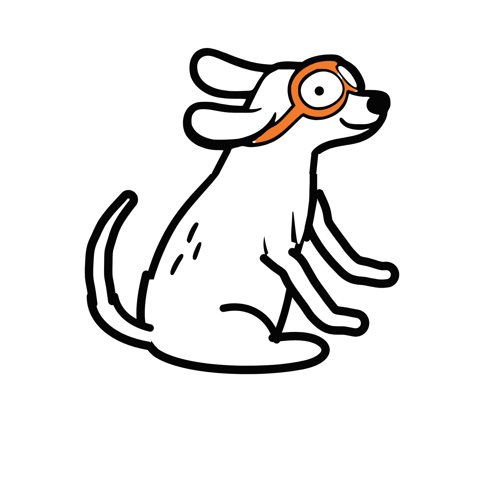
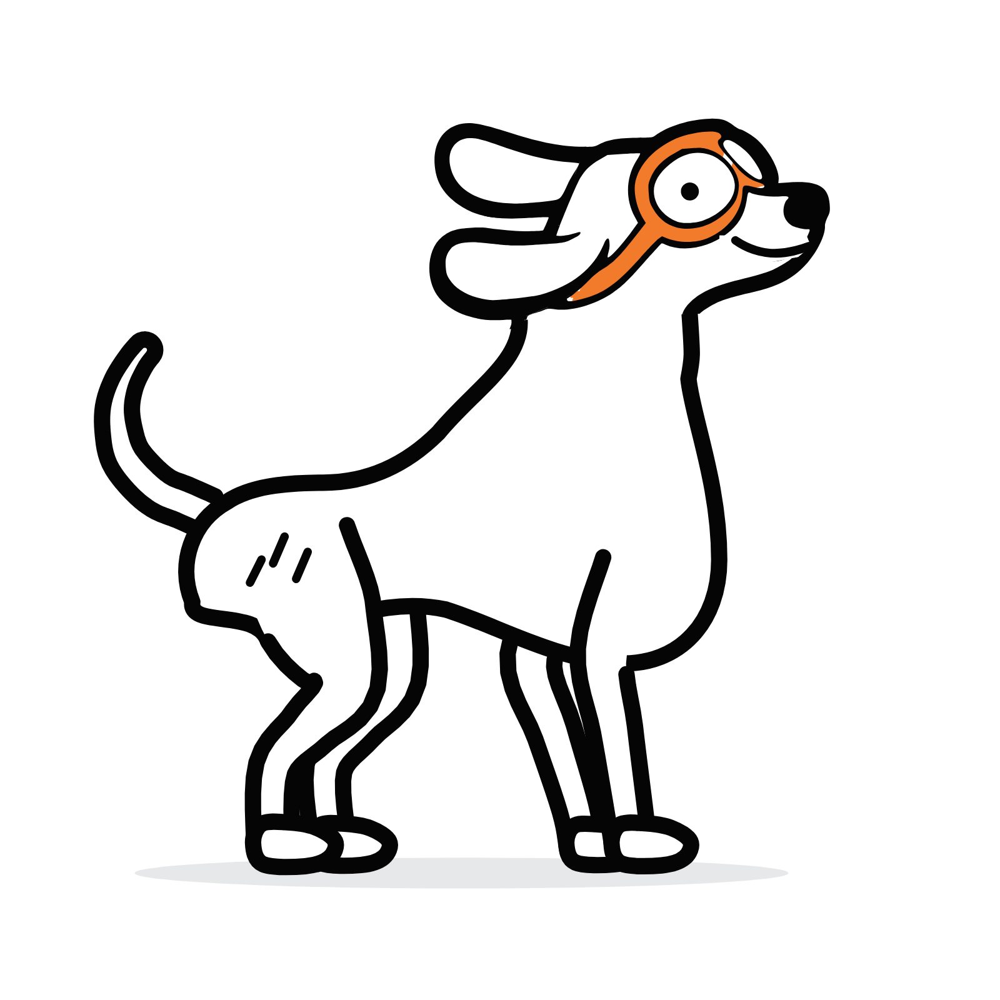
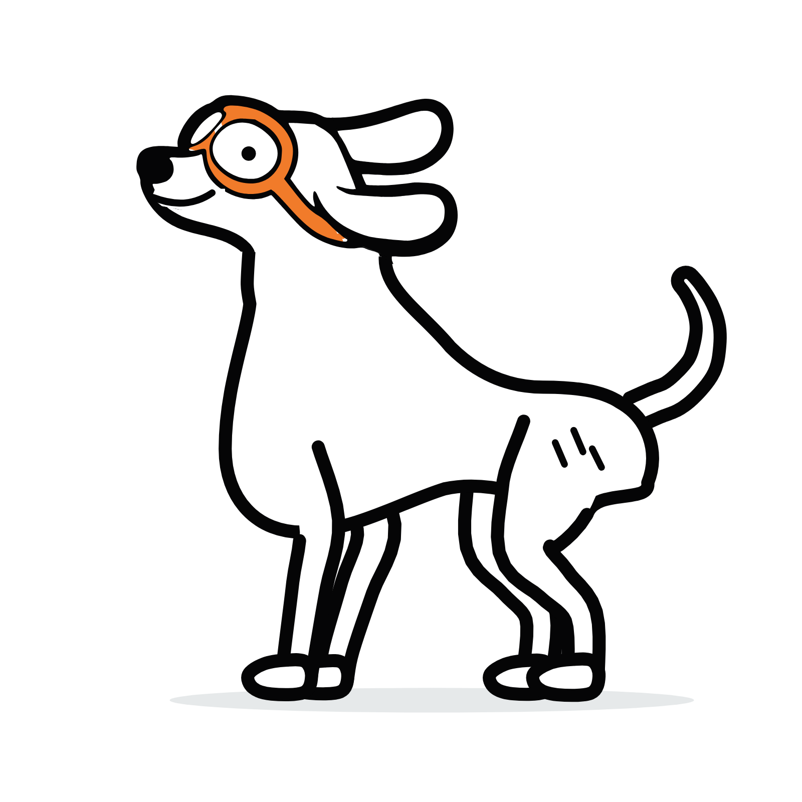
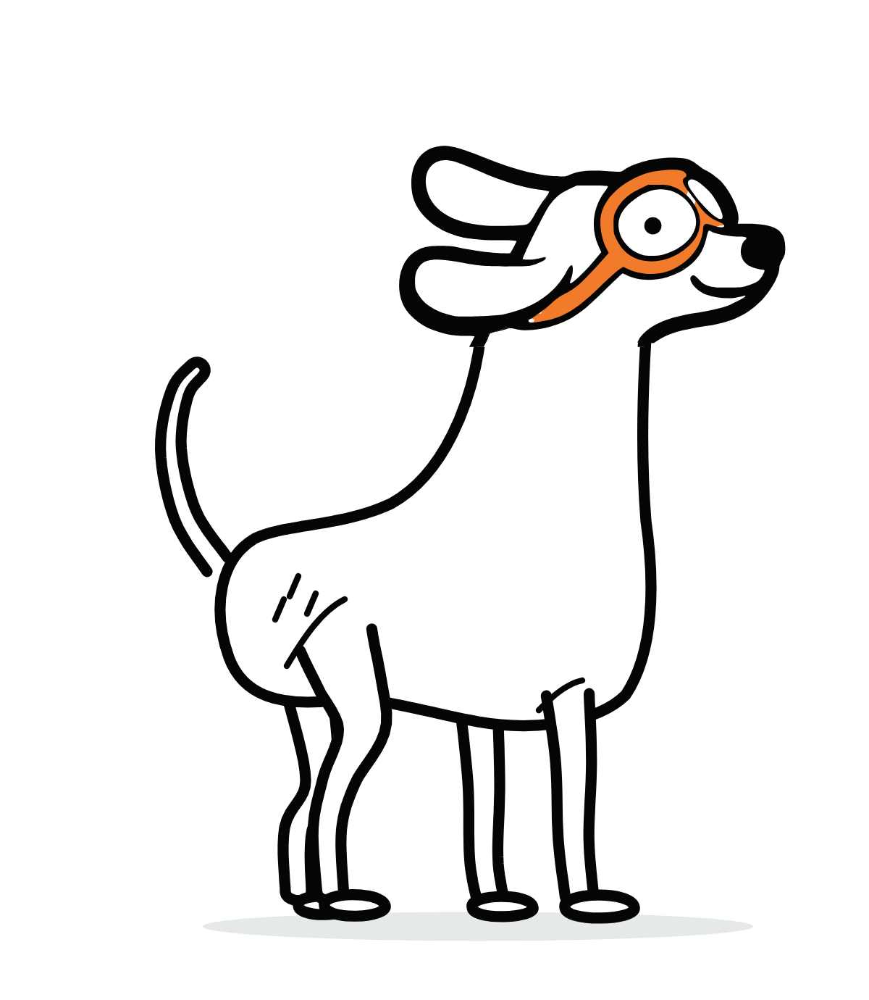

One character, ten views. Profile and 3/4-front views carry the exact traced logo head; front and rear heads are constructed in its vocabulary. No horizontal stretching. Constructed angles are proposed extensions.

01 Original seated profileORIGINAL — from the logo

02 Standing, four legsConstructed extension · rigged

03 Opposite sideMirror of 02 · rigged

04 3/4 frontConstructed extension · traced logo head